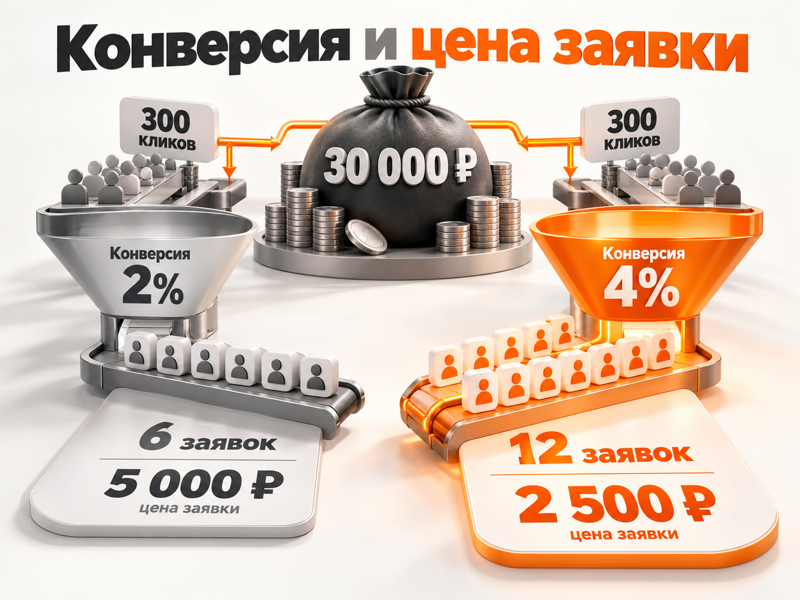

Блог о платном трафике
Яндекс Директ без сайта: можно ли запустить рекламу и когда это имеет смысл
Запустить Яндекс Директ без собственного сайта можно. В 2026 году для этого доступен бесплатный лендинг внутри Директа. Также можно продвигать Telegram-канал, страницу ВКонтакте, товары на маркетплейсах или организацию в Яндекс Картах.
При этом отсутствие собственного сайта не означает, что рекламе вообще не нужна страница перехода. Пользователь должен получить информацию о предложении и возможность совершить целевое действие: позвонить, написать, подписаться или оформить заказ.
Главный вопрос не в том, разрешает ли Яндекс рекламу без сайта, а в том, сможет ли выбранная площадка эффективно превращать платный трафик в клиентов.
Можно ли запустить Яндекс Директ без сайта в 2026 году
Да. В Яндекс Директе предусмотрен специальный сценарий «Продвижение бизнеса без сайта». Достаточно указать информацию о компании или услуге, чтобы система помогла создать посадочную страницу и рекламные объявления.
В Мастере кампаний объявления могут показываться в поиске Яндекса и Рекламной сети Яндекса (РСЯ). Для запуска необходимо настроить кампанию, пройти модерацию и оплатить размещение.
Есть и более простой вариант - «Простой старт». Он тоже позволяет начать продвижение без собственного сайта.
Важно различать две ситуации:
- Нет собственного сайта. Можно использовать лендинг Директа, страницу социальной сети, Telegram-канал или другую подходящую площадку.
- Нет вообще никакой страницы для перехода. Для обычного сценария продвижения товаров и услуг лучше создать хотя бы бесплатный лендинг Директа с контактами.
Собственный домен и разработка полноценного сайта не являются обязательными условиями запуска.
Куда можно вести рекламу из Яндекс Директа без сайта
Выбор зависит от того, какое действие должен совершить пользователь после клика.
| Куда направлять трафик | Для чего подходит | Главное ограничение |
|---|---|---|
| Бесплатный лендинг Директа | Заявки, звонки, обращения | Ограниченная гибкость структуры |
| Telegram-канал | Подписки, контент, прогрев аудитории | Подписка не равна продаже |
| Страница ВКонтакте | Продвижение небольшого бизнеса и сообщества | Меньше контроля над аналитикой |
| Карточка организации в Яндекс Картах | Локальный бизнес, маршруты, звонки | Подходит прежде всего для местных услуг |
| Маркетплейсы | Продажа товаров без собственного магазина | Зависимость от правил и экономики площадки |
Это разные рекламные сценарии. Не стоит считать их полностью взаимозаменяемыми: у каждого свои возможности оптимизации и измерения результатов.
Без собственного сайта можно использовать разные посадочные площадки в зависимости от цели рекламы.
Бесплатный лендинг Яндекс Директа
Лендинг Директа - это одностраничный сайт, который можно создать непосредственно в рекламном кабинете. Инструмент доступен клиентам из России, а создание страницы бесплатно.
На лендинге можно разместить описание товаров и услуг, фотографии, цены, каталог, контакты, форму заявки, ссылки на мессенджеры. При подключении организации из Яндекс Бизнеса доступны дополнительные сведения, включая адрес, карту и отзывы.
На страницу автоматически устанавливается счётчик Яндекс Метрики с готовыми целями.
Это уже не примитивная визитка с одним телефоном. Для несложной услуги такой функциональности может оказаться достаточно.
Но собственный сайт даёт больше возможностей для управления структурой, проведения экспериментов, создания разных страниц под аудитории и реализации сложной воронки продаж.
Telegram-канал
Для экспертных проектов, онлайн-образования и контентных продуктов сайт иногда не является обязательным первым этапом.
Человек видит рекламу, переходит в Telegram, подписывается на канал, знакомится с публикациями и позднее может приобрести продукт.
Для привлечения подписчиков в Яндекс Директе предусмотрен отдельный сценарий «Подписчики в телеграм-канал». Он работает с открытыми каналами.
После клика пользователь попадает на промостраницу. Если публикация заинтересовала его, он может перейти в канал и подписаться.
Директ позволяет отслеживать подписки с помощью специального бота.
Но здесь важно правильно выбирать показатель эффективности. Стоимость подписчика и стоимость покупателя - разные метрики. Недорогие подписки не гарантируют продажи.
Подробнее этот вариант разобран в статье «Реклама Telegram-канала в Яндекс Директе».
Группа или страница ВКонтакте
Рекламу можно направлять на подходящую страницу социальной сети, если она соответствует предложению и требованиям модерации.
Например, у небольшого мастера уже может быть сообщество с примерами работ, фотографиями, ценами и отзывами.
В этом случае создание отдельного сайта не всегда оправданно на первом этапе.
Но есть ограничения:
- посетитель может отвлечься на другой контент;
- нельзя полностью управлять устройством страницы;
- сложнее выстроить собственную аналитику;
- доступность функций зависит от сторонней платформы.
Страница ВКонтакте должна быть полноценной посадочной площадкой, а не пустым сообществом с несколькими публикациями.
Маркетплейсы и Авито
Для продавцов товаров сайт тоже не всегда необходим.
В Мастере кампаний существует отдельный сценарий «Продажи на маркетплейсах». Он поддерживает продвижение товаров на Яндекс Маркете, Ozon, Wildberries и Авито.
В таком случае покупатель может оформлять заказ непосредственно на площадке.
Но результат зависит не только от рекламы. На конверсию влияют товарная карточка, цена, отзывы, доставка, наличие товара и конкуренция внутри маркетплейса.
Яндекс Карты
Для локального бизнеса особое значение может иметь карточка организации в Яндекс Бизнесе.
Пользователь ищет ближайшую мастерскую, салон или другую компанию, изучает информацию, звонит либо строит маршрут.
В Директе можно подключать продвижение организации из Яндекс Бизнеса, в том числе при запуске без собственного сайта.
Но не нужно путать продвижение организации в Картах с обычной рекламой, ведущей на сайт. Это разные варианты взаимодействия пользователя с бизнесом.
Как запустить Яндекс Директ без сайта: пошаговая инструкция
Самый понятный способ запуска - создать бесплатный лендинг в Мастере кампаний и использовать его как посадочную страницу.
Шаг 1. Выберите продвижение без сайта
Откройте Яндекс Директ, войдите в рекламный кабинет и нажмите «Добавить», затем «Кампанию».
В Мастере кампаний выберите «Продвижение бизнеса без сайта».
В поле для сайта воспользуйтесь вариантом «Создать лендинг».
Если используете «Простой старт», выберите «Продолжить без сайта».
Шаг 2. Создайте лендинг
Укажите название бизнеса и описание предложения.
Желательно сразу подготовить конкретную информацию:
- какую услугу оказывает компания;
- в каком городе или регионе она работает;
- сколько стоит услуга либо от чего зависит цена;
- какие условия получает клиент;
- как связаться с исполнителем.
Например, вместо общего описания «Ремонт техники» лучше написать: «Ремонт стиральных машин на дому в Ростове-на-Дону. Диагностика, устранение неисправностей, выезд мастера».
Указывайте только реальные условия, которые сможете выполнить.
Директ сформирует страницу на основе предоставленного описания. После этого обязательно проверьте и отредактируйте созданные материалы.
Шаг 3. Добавьте контакты и форму заявки
Укажите действующий телефон, доступные мессенджеры и другие способы связи.
Если планируете получать заявки через форму, настройте её и укажите, куда должны поступать обращения.
На лендинге можно настроить получение заявок по электронной почте или через Яндекс Бизнес. Для электронной почты потребуется подтверждение адреса.
Проверьте страницу на телефоне: кнопки должны открываться, контакты быть правильными, а форма отправляться без ошибок.
Шаг 4. Создайте объявления
Проверьте предложенные Яндексом заголовки, тексты и изображения.
Объявления должны соответствовать содержанию лендинга.
Если обещаете конкретную услугу или цену, пользователь должен находить эти сведения после перехода.
Выберите географию, время показа и аудиторию. При ручной настройке можно использовать тематические слова и исключения.
Не стоит полностью полагаться на автоматически созданные материалы, особенно когда предложение имеет особенности, которых нейросеть не знает.
Шаг 5. Настройте цели и бюджет
В Мастере кампаний доступны варианты продвижения, ориентированные на переходы либо целевые действия.
Для нового бизнеса важно понимать, что система считает конверсией.
Например, клик по телефону или кнопке мессенджера ещё не означает, что человек действительно позвонил, написал сообщение или стал клиентом.
Недельный бюджет выбирайте исходя из предполагаемой стоимости трафика и допустимых расходов на привлечение заявок.
Шаг 6. Запустите и проверьте рекламу
После настройки отправьте кампанию на модерацию и оплатите размещение.
После запуска проверяйте:
- количество показов и кликов;
- расход рекламного бюджета;
- целевые действия на лендинге;
- реальные обращения;
- стоимость обращения;
- количество заинтересованных клиентов.
Для запуска без сайта нужно подготовить страницу, добавить контакты, настроить объявления и пройти модерацию.
Не оценивайте результат только по числу кликов на рекламные объявления.
Что умеет бесплатный лендинг Директа и чем он ограничен
По состоянию на октябрь 2026 года лендинги Яндекс Директа поддерживают достаточно много функций, необходимых для запуска небольшой рекламной кампании.
| Возможность | Лендинг Директа |
|---|---|
| Бесплатное создание страницы | Да |
| Описание товаров и услуг | Да |
| Фотографии и дополнительные блоки | Да |
| Каталог с ценами | Да |
| Форма заявки | Да |
| Телефон и мессенджеры | Да |
| Яндекс Метрика и готовые цели | Да |
| Карта и отзывы из Яндекс Бизнеса | При подключении организации |
| Произвольная структура и функциональность | Ограничены возможностями конструктора |
| Полноценный контроль над сайтом и его развитием | Нет |
Есть ещё одна интересная возможность: лендинг Директа можно использовать в качестве резервной посадочной страницы.
Если основной сайт недоступен из-за определённых проблем с интернет-соединением, система при наличии технической возможности может показать пользователю резервный лендинг.
Это полезно даже компаниям, у которых уже есть полноценный сайт.
При этом бесплатное создание лендинга не означает бесплатную рекламу. За продвижение по-прежнему нужно платить.
Подробное сравнение типов посадочных страниц есть в статье «Что такое лендинг в Яндекс Директе и какой сайт выбрать для рекламы».
Когда Яндекс Директ без сайта имеет смысл
Реклама без собственного сайта оправданна, если выбранная площадка позволяет человеку быстро принять решение или выполнить необходимое действие.
Например:
Простая локальная услуга. Для записи на ремонт обуви или другую несложную услугу человеку иногда достаточно цены, фотографий работ, адреса и телефона.
Экспертный продукт с длительным прогревом. Если продажа строится через полезные публикации и знакомство с автором, Telegram может быть самостоятельным первым этапом воронки.
Продажи на маркетплейсе. Если покупатель оформляет заказ на Ozon или другой площадке, отдельный интернет-магазин не всегда нужен.
Быстрый тест предложения. Бесплатный лендинг позволяет проверить первоначальную реакцию аудитории без расходов на полноценную разработку.
Но во всех этих случаях нужно оценивать не только стоимость запуска, а конечную экономику привлечения клиента.
Чем сложнее решение о покупке, тем больше информации обычно требуется человеку перед обращением.
Когда лучше не запускать рекламу без полноценного сайта
Для сложных, дорогих и конкурентных услуг собственный сайт часто оказывается более подходящим решением.
Представим человека, который ищет юридическую помощь по банкротству физических лиц.
Перед обращением ему важно узнать стоимость, условия работы, состав услуги, опыт специалистов, ограничения и возможные результаты.
Переход в социальную сеть с десятками публикаций не обязательно поможет быстро получить ответы.
Аналогичная ситуация часто возникает при продвижении:
- строительства и ремонта;
- недвижимости;
- сложных медицинских услуг;
- B2B-оборудования;
- дорогостоящих образовательных программ;
- услуг с длительным циклом принятия решения.
Чем больше вопросов должен закрыть бизнес до получения заявки, тем выше требования к посадочной странице.
Это не означает, что собственный сайт всегда обеспечивает более высокую конверсию. Плохо подготовленный сайт может работать хуже хорошего лендинга Директа.
Поэтому сравнивать нужно не наличие домена, а качество предложения и способность страницы помочь человеку принять решение.
Как считать стоимость заявки при рекламе без сайта
Стоимость заявки зависит прежде всего от цены привлечённого трафика и его конверсии.
Формула:
Стоимость заявки = рекламные расходы / количество заявок.
Рассмотрим условный пример. Это не средние показатели Яндекс Директа и не прогноз конкретной ниши.
Допустим:
- стоимость клика составляет 100 ₽;
- реклама приводит 300 переходов;
- расходы составляют 30 000 ₽.
Сравним две посадочные страницы с разной конверсией.
| Показатель | Вариант А | Вариант Б |
|---|---|---|
| Рекламные расходы | 30 000 ₽ | 30 000 ₽ |
| Переходы | 300 | 300 |
| Конверсия в заявку | 2% | 4% |
| Заявки | 6 | 12 |
| Стоимость заявки | 5000 ₽ | 2500 ₽ |

В условном примере увеличение конверсии с 2% до 4% снижает стоимость заявки с 5000 до 2500 рублей.
При одинаковом количестве переходов повышение конверсии с 2% до 4% увеличивает количество заявок вдвое.
Это не означает, что собственный сайт обязательно удвоит конверсию. Пример показывает, насколько стоимость заявки зависит от качества посадочной страницы.
Если бесплатный лендинг уже хорошо конвертирует трафик, разработка отдельного сайта может не дать быстрого экономического преимущества.
Но если полноценный сайт позволяет существенно улучшить конверсию и качество обращений, экономия на разработке может оказаться невыгодной.
Для оценки реального результата важно считать не только заявки, но и клиентов, которые действительно покупают.
Подробнее о расчётах есть в статье «Какая конверсия рекламы считается хорошей».
Как отслеживать заявки, если собственного сайта нет
Отсутствие сайта не делает аналитику невозможной, но влияет на её точность и доступные инструменты.
На бесплатном лендинге Директа автоматически создаются цели Яндекс Метрики для основных действий:
- кликов по номеру телефона;
- переходов в мессенджеры;
- отправок формы заявки;
- построения маршрута.
Однако между кликом по кнопке и реальным обращением существует разница.
Клик по WhatsApp или Telegram не подтверждает, что пользователь отправил сообщение.
Для проверки фактических обращений нужно дополнительно учитывать поступившие заявки, переписки, звонки и результаты их обработки.
Если реклама направлена на Telegram-канал, можно отслеживать подписки через специального бота Директа.
На сторонних площадках возможности аналитики различаются. Наличие рекламного кабинета не означает, что в нём автоматически доступны достоверные сведения обо всех продажах.
Основное правило: оптимизировать рекламу по тому действию, которое действительно связано с бизнес-результатом, а не просто удобно измеряется.
Можно ли протестировать бизнес на бесплатном лендинге
Да, бесплатный лендинг Директа подходит для первоначальной проверки интереса к предложению.
С его помощью можно получить представление о стоимости трафика, реакции пользователей на объявления и первых обращениях.
Но результаты такого теста имеют ограничения.
Предположим, вы запустили рекламу сложной услуги. Конкуренты предлагают подробные сайты с примерами работ, отзывами, условиями и расчётами.
Ваш лендинг содержит только короткое описание и форму заявки.
Если обращений мало, нельзя автоматически заключить, что спроса на услугу нет.
Возможные причины:
- неудачные рекламные запросы или аудитории;
- слабое предложение;
- высокая конкуренция;
- недостаточная информация на странице;
- технические проблемы с формой;
- слишком маленький объём данных.
Поэтому бесплатный лендинг подходит для проверки первой гипотезы, но не всегда позволяет объективно оценить весь потенциал направления.
Если продукт сложный, для теста лучше подготовить хотя бы одну качественную посадочную страницу под конкретную услугу.
Что выбрать: бесплатный лендинг, Telegram или собственный сайт
Решение зависит от того, как именно человек покупает ваш продукт.
Если ему нужны только фотографии, цена и возможность записаться, бесплатного лендинга может хватить.
Если человек сначала читает экспертный контент, знакомится с автором и только после этого принимает решение, продвижение Telegram-канала может быть логичнее.
Если товар продаётся на маркетплейсе, отдельный сайт для первых рекламных кампаний необязателен.
Но когда покупателю нужно изучить сложное предложение, сравнить исполнителей, получить расчёт и убедиться в надёжности компании, собственная посадочная страница обычно предоставляет больше возможностей.
Вывод: Яндекс Директ без сайта запустить можно. Но отсутствие расходов на разработку не гарантирует более дешёвого привлечения клиентов. Выбирать посадочную площадку нужно по тому, насколько хорошо она соответствует воронке продаж и позволяет измерять реальные результаты.
Если требуется полноценная рекламная система с контролем качества заявок и продаж, стоит рассматривать сайт и рекламу как связанные элементы одной воронки.